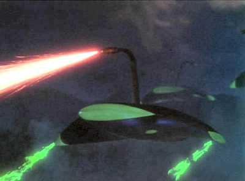

Les vaisseaux martiens envahisseurs et leur rayon calorifique destructeur dans le film The War
of the Worlds de Byron Haskin
Sortie du film La Guerre des mondes de Byron Haskin, adaptation de la nouvelle de Herbert George Wells
de .
Début de l'année
Un groupe d'officiers du renseignement de l'USAF liés au projet UFO préparent la diffusion de leurs cas les plus stupéfiants, ainsi
que de photos d'ovnis non expliquées. Aucune conclusion finale n'est prévue, bien que les données diffusées
pointent fortement vers une réponse interplanétaire. Au dernier moment, les peurs d'officiers de haut-rang font
avorter le projet Keyhoe, Donald E.: Someone's
Watching Over Us, The True Report on Flying Saucers, 1967.
Albert K. Bender, éditeur d'un journal sur les ovnis intitulé Space Review,
publie une déclaration où il affirme être tombé sur des informations pouvant résoudre le mystère des ovnis mais ne
pouvoir le publier parce qu'il en a reçu l'ordre. Il termine sa déclaration par une recommendation de prudence
extrême aux autres passionnés d'ovnis, et stoppe ses publications.
Des ovnis au-dessus de Moscou (Russie) laissent tomber des cheveux d'angesClypeus, 1967-12.
A Slobozia, Bucarest (Roumanie), par une journée ensoleillée
Gabriela Dima, 6 ans (par la suite étudiante en économie), voit un objet étrange au-dessus des champs. Au milieu
de celui-ci se trouve une petite fenêtre verte et derrière un visage carré avec des yeux étranges. La fenêtre
disparaît alors et l'objet s'envole sans faire de bruit.
Près de la base de l'USAF de Castle (Californie), l'équipage d'un
avion d'entraînement au bombardement TB-29 observe un objet ovale et grisâtre effectuer 4 dépassements de leur
appareil (3 fois à une distance de 10 à 20 miles), puis plonger à la verticale comme s'il s'agissait de 2 objets
Cas Blue Book n° 2686 non résolu.
L'équipage d'un Fouga de la base de Pau (France) renonce à poursuivre un engin
discoïdal en raison d'une chaleur insupportable ressentie dans l'appareil Guieu, Jimmy: Black-out
sur les soucoupes volantes.
Profitant de la vague d'observations d'ovnis en Angleterre et plus généralement en Europe, la BBC réédite
l'expérience de CBS et d'Orson Welles en 1938.